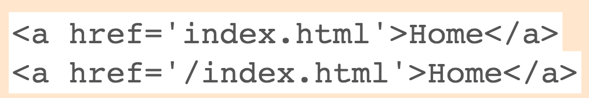

class: middle # Projects in Digital Composition: # Communicating with Data <hr> ### Skills Acquisition, Our Skills Assignment, HTML Continued <hr> Matthew J. Lavin Clinical Assistant Professor of English and Director of Digital Media Lab University of Pittsburgh Spring 2019 --- class: middle # Topics to Cover <hr> ### 1. Kaufman's Principles ### 2. Skills Assignment ### 3. HTML Continued ### 4. HTML Practice --- class: middle # Background on Kaufman <hr> - #### Heavily influenced by Anders Ericsson (of 10,000-hour rule fame) - #### We'll read Ericsson for next Monday, but Kaufman is easier to understand - #### Kaufman wanted to turn Ericsson's research into a self-instruction system - #### Focuses on the first 20 hours because it's "the steep part of the learning curve" (5) --- class: middle # Kaufman's Ten Principles of Rapid Skill Acquisition <hr> ### 1. Choose a Lovable Project ### 2. One Skill at a Time ### 3. Define a Target Performance Level ### 4. Deconstruct Skills into Subskills ### 5. Obtain Critical Tools --- class: middle # Kaufman's Ten Principles of Rapid Skill Acquisition <hr> ### 6. Eliminate Barriers to Practice ### 7. Make Dedicated Time for Practice ### 8. Create Fast Feedback Loops ### 9. Practice by the Clock in Short Bursts ### 10. Emphasize Quantity and Speed --- class: middle # Why Choose a Lovable Project? And How? <hr> --- class: middle # One Skill at a Time vs. Subskills: How Can we Do Both? <hr> --- class: middle # Finding Critical Tools and Removing Barriers <hr> --- class: middle # Target Performance Level and Feedback Loops <hr> --- class: middle # Dedicated Time, Practicing by the Clock <hr> --- class: middle # Skills Assignment <hr> #### Read the assignment description at https://pdc-spring-2019.matthew-lavin.com/assignments/skills and be prepared to discuss the following aspects of the assignment: 1. #### How You Will Choose a Topic 2. #### What Your First Blog Post Will Include 3. #### What Goes in Your Initial Curriculum 4. #### What Your Second Blog Post Will Include 5. #### How to Complete 20 Hours of Deliberate Practice 6. #### How to Fill Out Your Learning Log 7. #### What Your Third Blog Post Will Include 8. #### How to Turn Everything In --- class: middle # HTML Subskills <hr> - #### Structuring Content - #### Links - #### Lists --- class: middle # Structuring Content <hr> https://www.lynda.com/HTML-tutorials/value-structure/170427/196152-4.html --- class: middle # Semantic Elements <hr> - #### ```<header>```, ```<main>```, ```<footer>``` - #### ```<nav>```, ```<div>```, ```<article>```, ```<section>```, ```<aside>``` - #### WAI-ARIA --- class: middle # Links <hr> - #### How do we define relative and absolute paths? - #### How would you code a link to go up one directory and look for a file? - #### How are the following two examples different?  --- class: middle # HTML Practice Activity <hr> 1. #### Go to your Github Pages site and look at the root <code class="remark-inline-code">index.html</code> page. If you followed my instructions, you should have a fairly simple page with links to the HTML/CSS homework and your Pittsburgh Data Assignment (see https://rlb118.github.io/). 2. #### Using what we learned in the last set of videos, add semantic tags for some common content areas, such as a banner, a navigational menu, a main content area, an aside section, a header, and a footer. Take a look at https://getbootstrap.com/docs/4.0/examples/ for some formatting ideas. (We'll do more with these later.) 3. #### Make sure all your links are working and that your content is where it ought to be (using relative paths). 4. #### Add an absolute path link that connects directly to your course blog.